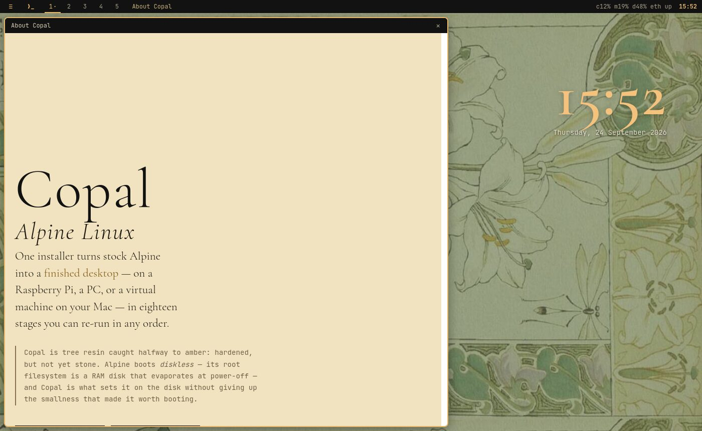
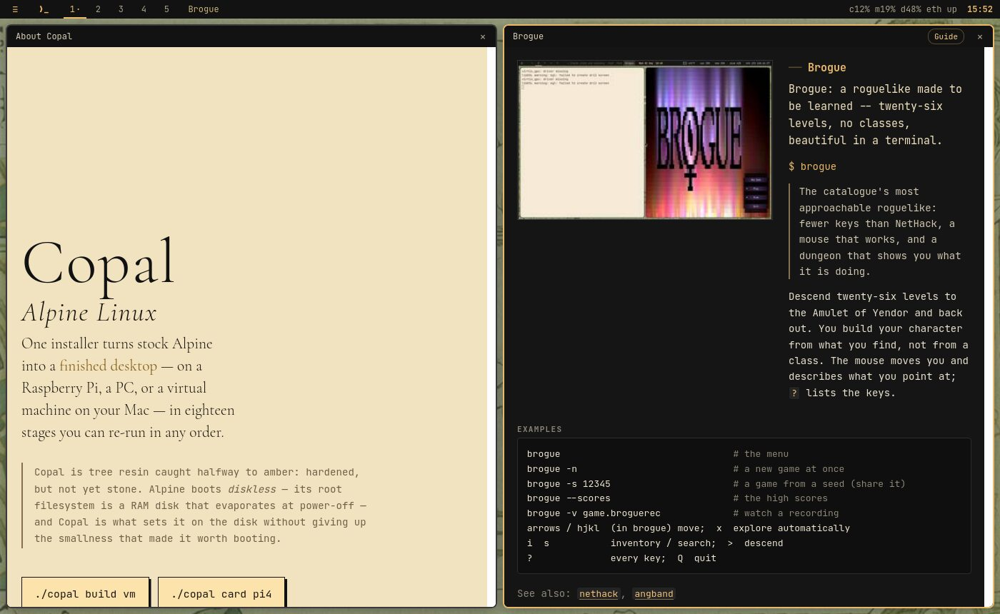
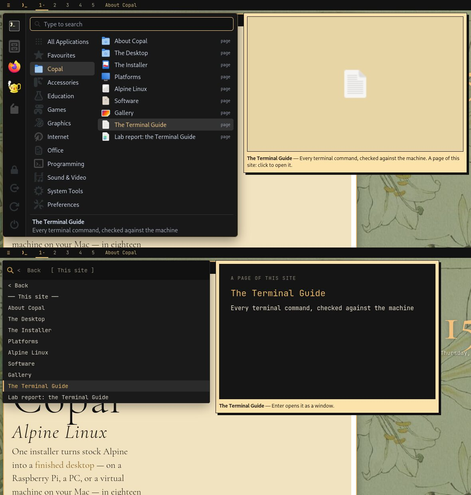
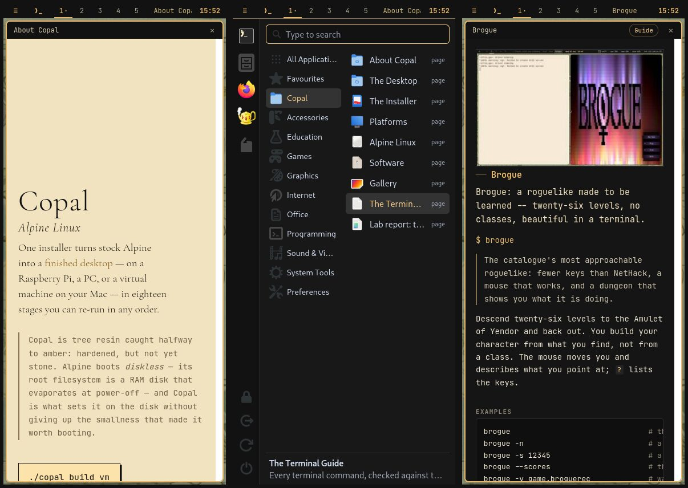
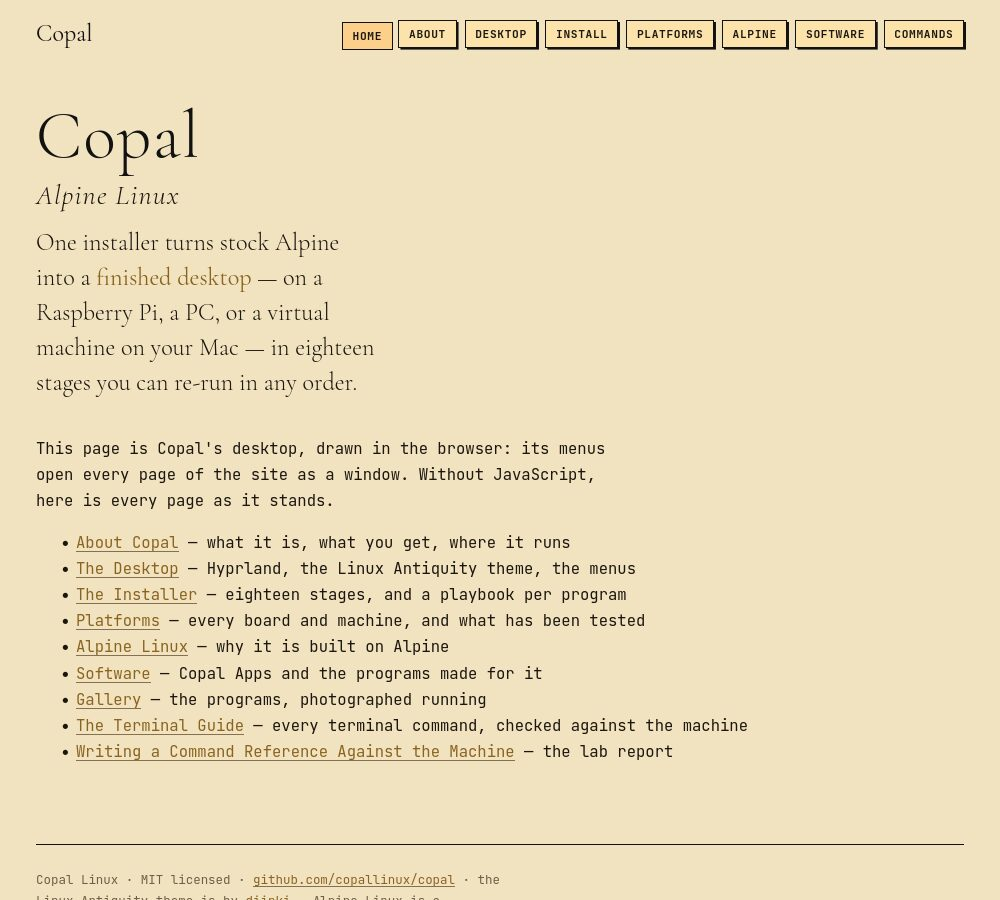
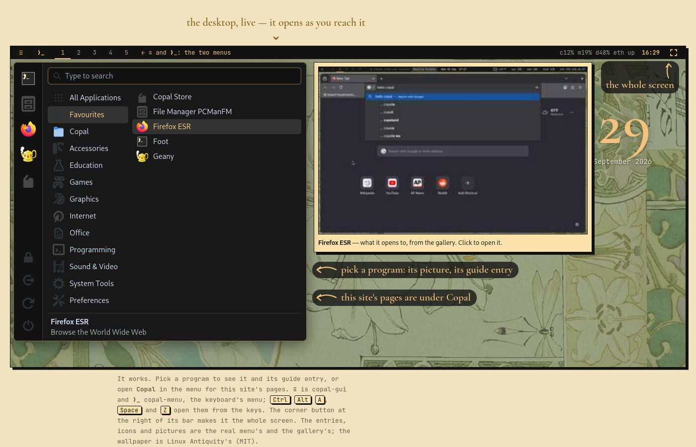

The Desktop Is the Site: Rebuilding copallinux.org's Front Door as the Copal Desktop, Tested in a Browser It Never Shows
Lab Report — IEEE Format
Copyright (c) 2026 Paul Richeson. MIT licensed — see LICENSE. Copal Linux is
an aggregation of Alpine Linux, not a derivative work of it; Alpine and its
packages remain under their own licences.
Copal Linux, Hyprland 0.54 desktop, Alpine 3.24 aarch64 guest under UTM on a Mac: the "bench". 24 September 2026. The work was done by the author with an AI coding assistant (Claude) in one terminal on the bench, in five phases, each stopped for review; this report records the method as well as the results, so the method can be used again.
Abstract
copallinux.org opened on a conventional page: a header, five numbered
sections, and two simulations of Copal's menus set in it as pictures. Every
page of documentation behind it had just been checked against the machine —
274 Terminal Guide entries, 193 man pages, 216 gallery pictures, a home page
for every program in both menus — and was reached through a row of links. The
work reported here made the front door the desktop itself: index.html is
Copal's Hyprland desktop, full screen, and everything on the site opens from
its two menus as a window on it. A program's window puts its gallery picture
beside its Terminal Guide entry; a page of the site opens framed; windows tile
as Hyprland tiles them, across five workspaces, and every window has an
address that Back and Forward walk. It works from the keyboard with Copal's
own shortcuts, on a phone, to a screen reader, and — as a plain list — without
JavaScript. Fifty-five checks drive it in a real browser and read their
verdicts from a web server's log, so the browser runs headless and nothing is
ever shown on the author's screen. The checks and the screenshots found eleven
defects in the work and four in the checks themselves; all are fixed.
I. Objective
- Make the site's front door the Copal desktop, with the documentation reached through the desktop's own menus rather than a list of links.
- Show a program as its gallery picture beside its written entry, one click from the full entry, the man page and the project's home page.
- Keep every existing address working, keep the site usable without JavaScript, on a phone and to a screen reader, and load no more on the first screen than the old page did.
- Test it the way a person would use it — clicks, typing, history — without taking over the author's screen, and leave the tests in the repository so they can be run again.
II. Materials
- The bench: the Copal machine the site describes, with Firefox ESR 140, Python 3.14 and ImageMagick.
- What already existed: the two menu simulations (
menu-sim.js,textmenu-sim.js), their data generator (tools/copal-menu-sim.py, which reads the real menus on a running desktop), the Terminal Guide's generator (tools/copal-command-ref.py) and the site's pages and stylesheet [1], [2]. - The plan:
docs/splash-plan.md[3], written and reviewed first, with the author's three decisions: the desktop is the whole site; a program's picture sits beside its entry; both menus, switched on the bar.
III. Method
A. Five phases, each stopped for review
| Phase | What it built | Commit |
|---|---|---|
| 1 | the shell: bar, clock, both menus, tiled windows, addresses, framed pages | 226ef89 |
| 2 | program windows: picture beside entry; guide-cards.json |
4232e3c |
| 3 | the site in both menus: a Copal section and a "This site" branch | 2536692 |
| 4 | keys, phones, screen readers | 216aa68 |
| 5 | the checks in the repository, the pictures, this report | — |
Each phase ended with its checks run, its screenshots looked at, and a report to the author, who decided whether it went in. Two decisions were taken at those stops rather than in the plan: the welcome window opens at two-thirds of the width on a first visit (a single tiled window filled the screen and hid the desktop it was meant to introduce), and the Terminal Guide window uses the page's own search box rather than a second one in the title bar.
B. The menus became parts, not pictures
The two simulations each built their own 1280×800 stage, scaled to fit a
plate on the page. A framed page and a phone need real pixels, so each became
a part the desktop mounts — menu-gui.js (copal-gui, Super+A) and
menu-keys.js (copal-menu, Super+Space and Super+Z) — keeping their behaviour
rule for rule and handing every launch to the desktop as the same small item:
a name and a command, or a page. git mv kept their history. The desktop,
desk.js, owns the bar, the clock, the windows and the addresses.
C. One source for each fact
- The site's pages are listed once, in the generator's
SITE— title, one line, and a theme icon. The menus show them; the desktop frames only them, so an address cannot put another site inside this one. - A program's entry is written once, in
docs/commands/. The guide's generator, which already writescommands.html, now also writesguide-cards.json— each command's purpose, section, mode and man page, and the written entry's why, use, examples and "see" — andmake lintchecks it with the rest. - A program's picture and home page come from the menus' data, as before.
D. Checks that read a log, not a screen
Each page of checks (tools/desk-check/t-desk*.js) is index.html with one
script added after desk.js. The script clicks, types, dispatches key events
and steps through history, and reports each verdict by requesting
/verdict/N/TEXT from the local server that serves the page. The runner reads
the verdicts from the server's log. Nothing has to be looked at, so Firefox
runs headless and the author's screen is never touched — an improvement on the
first runs, which opened a real Firefox on workspace 3, where the author had
asked test windows to go.
Screenshots are the other half, and they need two concessions a person's
browser does not: a headless screenshot is taken at the load event, before a
fetch completes or a fade finishes, so the screenshot page makes fetch
synchronous and fades instant. Neither is used by the checks.
The site is served, not opened from file://: Firefox gives each file its own
origin, and the desktop must reach into the pages it frames.
IV. Results
A. The site

Fig. 1. copallinux.org at a first visit: the welcome window (About Copal) beside the desktop it opened on.

Fig. 2. Two windows, tiled. Brogue, opened from copal-gui, is a terminal program: its window is set as foot would set it, its gallery picture beside its Terminal Guide entry, the examples across the width beneath.

Fig. 3. The site in both menus: copal-gui's Copal section (top) and copal-menu's "This site" branch (bottom), each with the card saying what the selected page is.

Fig. 4. At 390 px: the welcome window, copal-gui as a sheet under the bar, and a program's window with its picture above its entry.

Fig. 5. The same address with JavaScript switched off: every page, as a list.
B. Weight
| File | Size | Compressed |
|---|---|---|
index.html |
3.4 kB | 1.4 kB |
desk.js + menu-gui.js + menu-keys.js |
51.5 kB | — |
menu-data.js |
165 kB | 42 kB |
guide-cards.json (first program window only) |
238 kB | 83 kB |
commands.html (never loaded by a program window) |
714 kB | — |
The first screen loads what the old page's two simulations loaded — the data, the icon sheet, the wallpaper — plus the welcome window's page. The cards are fetched by the first program window, not on arrival.
C. The checks
| Page | Checks | What they drive |
|---|---|---|
t-desk |
18 | menus, tiling, workspaces, addresses, Back and Forward, links in pages, closing |
t-desk2 |
9 | program windows: entry, foot, title-bar links, man pages, links between entries |
t-desk3 |
11 | the site's pages in both menus, search, the card |
t-desk4 |
17 | shortcuts (Super and Ctrl+Alt), Super tap, keys from a framed page, fields, focus, what a screen reader is told |
All 55 pass, headless, in about 40 seconds on the bench.
D. Defects found in the work, and what caught each
| Defect | Caught by | Fix |
|---|---|---|
| A lone welcome window filled the screen and hid the desktop | the author, at review | two-thirds on a first visit; the clock moved right |
Example commands nearly invisible: the site's pre colour inherited |
screenshot | the examples' own colour |
| Examples cut off beside a picture | screenshot | examples across the width beneath |
| An empty "no picture" frame took half a window | screenshot | the entry has the window to itself |
| A "$" prompt on key bindings that are not commands | screenshot | lines as the guide writes them |
| A program opened by its address was not known to be a terminal program | reading | the cards carry each command's mode |
| Links between entries: only 6 entries name a command in backticks | a failing check | "See also" from each entry's # see: (272 entries) |
| Page icons fell back to the generic executable | screenshot | icons this theme loads |
| Games, Graphics and Sound & Video had no icon — in the real copal-gui too | screenshot | their symbolic icons, in tools/copal-gui |
| Man pages opened in place rather than as windows | reading | #man/CMD addresses |
| The keyboard menu's phone sheet stopped short of the bottom | screenshot | pinned to the bottom |
The Games, Graphics and Sound & Video icons are the one defect in Copal itself: GNOME's Adwaita dropped the full-colour category icons, copal-gui's section list gives each section a symbolic one it does have, and these three had been missed. The fix went into the menu every Copal machine runs.
E. Defects in the checks
| Defect | Effect | Fix |
|---|---|---|
A check written as … \|\| true |
could not fail | a real condition: the card names the page |
null === null counted as a pass |
"the field names the selected option" passed with nothing selected | requires a selection |
| A search for a program copal-gui does not carry (rsync) | a cascade of false failures | a program it does carry |
| A check that stopped at the first error reported only the error | the passes before it were hidden | report what passed, then the error |
V. Discussion
Tiling is the truth and not always the right first impression. A lone tiled window fills its workspace; that is Hyprland, and every later window follows the rule. The first window a visitor sees is the exception, because its job is to introduce the desktop, which it cannot do on top of it.
A check must be able to fail. Two of the four defects in the checks were checks that could not fail. Writing each check against a condition that is false before the feature works, and looking at a failing run once, would have found both.
The harness matters as much as the checks. Several runs were spoiled by
the harness, not the site: a port held by another session's server
(the screenshots were of that session's copy and were discarded), a server
that outlived its kill because $! named a subshell, and a log read as
binary because it was emptied while being written. A /tmp too small for four
browser profiles stopped the fourth. Each fix is now in desk-check.sh.
What was not tested. The screen-reader work is tested as markup — roles, labels, the selection named on the field — not with a screen reader speaking it. The phone layout is tested at 390 px in a desktop browser, not on a phone. Browsers keep some Super combinations for themselves (Cmd+Q quits a browser on a Mac), which is why Copal's Ctrl+Alt fallbacks [4] are the ones to rely on.
VI. Procedures
Run the checks (needs Firefox and Python 3):
make desk-check
Make the pictures for a report like this one:
sh tools/desk-check/desk-check.sh --shots /tmp/desk-shots
After changing a Terminal Guide entry, rebuild the guide and its cards:
make commands
After changing the menus or the site's pages (SITE in
tools/copal-menu-sim.py), regenerate the menus' data on a running Copal
desktop:
python3 tools/copal-menu-sim.py
Add a check: a condition that is false until the feature works, pushed
onto out with ok(name, condition, detail) in the right t-desk*.js.
VII. Files touched
docs/index.html— the desktop, and its no-JavaScript list;docs/about.html— the old home page's text, the welcome window.docs/desk.js,docs/desk.css— the desktop;docs/menu-gui.js,docs/menu-keys.js,docs/menus.css— the two menus as parts.docs/guide-cards.json, written bytools/copal-command-ref.py;docs/menu-data.jsanddocs/img/menu/icons.png, written bytools/copal-menu-sim.py.docs/site.css—html.framed; every page's nav gains About.tools/copal-gui(synced into stage 4) — three section icons.tools/desk-check/— the checks and their runner;make desk-check.
VIII. Addendum: the page first (24 September 2026)
The live site met its first visitor, the author, the same evening, and the whole-screen desktop was reversed. It was too much at once, and it did not say what to do: nothing on it said "click". Three changes followed.
The page first, the desktop on scroll. index.html is a page again, and
the desktop is a panel in it, as wide as the screen allows. When the panel is
half in view, copal-gui opens by itself on Favourites with Firefox ESR
selected and its picture showing -- without taking the keyboard, so the page
still scrolls and a phone does not raise its keyboard. Gold arrows point at
the menu ("pick a program", "this site's pages are under Copal"), a line on
the bar names the two menu buttons, and those buttons glow; all of it goes at
the first click. The bar's corner button makes the desktop the whole screen,
and a shared address opens straight into it.
Ctrl+Alt only. The desktop took a lone Super tap as Hyprland does. Off a Copal machine Super is Cmd or the Windows key, and Cmd+Tab reaches a page as Cmd going down and up with nothing between: the menu opened by itself. The web desktop now answers only Copal's Ctrl+Alt fallbacks.
Versioned files. GitHub Pages lets a browser keep a file for ten minutes,
long enough to pair a new page with an old script. tools/copal-stamp.py
versions index.html's own files by their content, and lint checks it.

Fig. 6. The front page, scrolled to its desktop: the menu open by itself, the arrows, and the line on the bar.
The checks follow: 61 of them, the first page rewritten for the page, the arrival, the cues and the whole screen, and a second load at a shared address.
References
[1] Copal Linux, "Writing a Command Reference Against the Machine,"
docs/terminal-guide-lab-report.md, 2026.
[2] Copal Linux, "The Terminal Guide: plan," docs/terminal-guide-plan.md,
2026.
[3] Copal Linux, "The Desktop Is the Site — plan," docs/splash-plan.md, 2026.
[4] Hyprland, "Binds," hyprland.conf on the bench: Super and Ctrl+Alt
shortcuts, version 0.54.3.